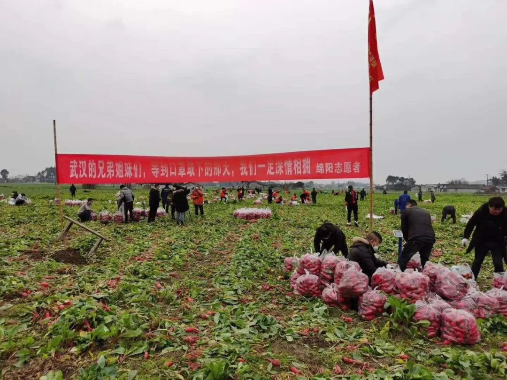
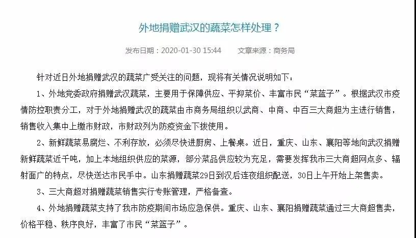

武汉大爷：我只要草纸，就别捆绑卫生巾了吧
原文链接 备份链接 武汉嫂子“汉骂”视频 “汉骂”嫂子和作家方方 数日前，一段微信语音在网上“一骂而红”，名叫“@雨儿”的业主在她所在的小区群里，用中气十足的武汉方言痛斥社区和中百超市推出“阴阳套餐”，社区推卸责任、置若罔闻。 “我们买一 …

黄伟说，这样的民间接力渠道效率是最高的，也不需要二次转运，“（菜）上午到，下午就直接发出去了，晚上就上桌了。”
文 | 谢婵 编辑 | 小豆
爱心菜被讨论了很久。家在武汉的陈维佳想上网看看，有没有人收到过捐赠的爱心菜。
他看见各种各样的声音，有人说自己小区已经收到三次爱心菜了，也有人说自己从未见过。质疑夹杂在感谢的发言里，网上找不到公开的全面信息，网友们不知道那些以吨为单位的爱心菜，是否真的被送到了他们最关心的方舱医院、定点医院、医护人员居住的酒店，和千万普通百姓的餐桌。
有网友说父母都被确诊后，他收到了社区送来的羊肉和蔬菜，说“彷佛看见了希望”。陈维佳想，武汉这么大，各个地方情况都不一样，况且爱心菜其实不多，如果真的能领到，估计就是一颗生菜一个莴笋而已，但他还是满怀期待，“希望自己的小区也能轮到一根萝卜”。
爱心菜的“最后一公里”
龙云找来的货车停在洪山体育馆附近。那是一辆车长近20米的巨型货车，里面载着从四川运过来的30吨白萝卜。疫情爆发以来，龙云通过自己做自媒体时积攒的人脉，与云南、四川、贵州等地的蔬菜捐赠方取得联系，帮他们把菜送往武汉，并随时直播进展。

分发爱心菜时，龙云会同时进行直播。
志愿者黄伟在现场协调分发蔬菜，这个在广告公司工作的前维和部队士兵，如今多了一个称号：蔬菜大户。
他身前停着五六十辆小车，来自各个街道、社区、业委会。都是从他这里得到消息，来领取捐赠蔬菜的。
蔬菜到了武汉，但抵达百姓餐桌并不是一件容易的事。
黄伟与多个社区的工作人员打过交道，分发蔬菜是个极其耗费人力物力的环节，而纵观目前大多数社区的工作人员能够承受的工作量，“运力的供需关系是绝对非常不合理的，无法平衡的”。
在这场民间接力中，余生和他的朋友们主动站出来，成了社区志愿者。他们已经为小区居民分发了超过3万斤爱心菜。

余生在朋友圈转发绵阳志愿者采摘萝卜的图片。
封城后很长一段时间，防疫战的焦点在医疗问题上，感染新冠病毒的患者为了床位焦头烂额，余生看着社区的工作人员“突然间成了一线”，要完成排查工作，要转运病人去医院，忙得昏天暗地。
余生想关注社区里的独居老人和五保户，想为他们送菜。但他也知道，社区的工作人员已经没有多余的力气来管生活琐事。
余生找到的第一批菜有5000斤，是从其他协调分发的志愿者处找到的，他那时并不知道这批菜来自哪个省份。
社区能够给他的帮助是一份盖章的证明，和一份社区内独居老人的名单，至于人手、运输车辆和防护用品，都只能靠他和朋友自行解决。
但能找到5000斤菜是运气极好的时候。黄伟说，目前协调分发蔬菜，一般社区只能领到500斤到2000斤不等。
余生所在的社区是还建社区，人口远超一般社区，一开始能拿到的蔬菜会多一点，但最近也只能分到1000斤或2000斤。如果是萝卜这种比较压秤的菜，按每人5斤分下去，老人们能拿到的只有两根萝卜。
他曾经找来1000斤柚子，本想第二天再拖点菜回来一起分掉，但正好赶上换通行证，所有车都出不去，他们怕柚子烂掉，只能赶快分掉。他觉得，为了两个柚子出一次门实在不值得，老人都是易感人群，每一次开门都冒着极大的风险。
那份独居老人名单也并不准确。余生第一次照着名单给老人发菜时，有很多老人跑下楼来，问自己能不能也拿一点菜回家，但他们并不在名单上。
余生后来才弄明白，社区的名单只统计了户籍在此的老人。他和朋友们再遇上新的独居老人就把名字加上去，名单一点一点变长。

余生志愿者团队给一处无人管理的小区发爱心菜。（受访者供图）
吨是一个听起来很庞大的单位，黄伟见过一车又一车的“30吨”蔬菜进入武汉，但他说，这只是杯水车薪，最终到达居民手里的只有一小袋菜，可能装着一个包菜两三个土豆，老人能吃一两天。
南都周刊此前曾采访过的一度丧失买菜渠道的听涛社区，业主质疑从未收到爱心菜的问题——周围几个社区发放爱心菜的消息时不时传来，有时是白菜，有时候是茄子，有时候也有水果。听涛社区的居民只能干羡慕其他社区的居民，看他们在微信群里表达感谢。
对此，听涛社区书记说，爱心菜是街道分给各个社区的，街道人口太多了，往往爱心菜分下来，到听涛社区这里，就数量不多了。他们只能选择优先发放给孤寡老人。
“这样的民间接力渠道效率是最高的”
这是最典型的民间爱心菜接力：货车司机运输外地捐赠的蔬菜抵达武汉郊外，或是到某个临时卸货仓库，武汉本地的志愿者提前将消息发出去，社区工作人员会带着社区接收函来领，再分发给居民。
黄伟说，这样的民间接力渠道效率是最高的，也不需要二次转运，“（菜）上午到下午就直接发出去了，晚上就上桌了。”
作为临时上场的民间志愿者，黄伟难以说清，过去的一个多月里，到底有多少捐赠的蔬菜进入武汉，又去往哪里。如此庞杂的信息统计工作不是他能够完成的，他只能保证，每一车他经手协调的爱心蔬菜都被有需要的社区拉走了，所有的社区接收函和感谢信他都留着。

每次分菜前，他都在微信里提前跟来领菜的人说好“先到先得”。这车从四川拉来的30吨萝卜，只用了一个半小时不到就分完了。

四川捐赠的一车30吨白萝卜一个半小时就分完了。（受访者供图）
志愿者们大多从封城之初就开始参与志愿活动，至今已一个多月，渐渐有些力不从心。
黄伟半开玩笑地说，“我老婆现在都不给我钱加油了。”余生和他的团队则开始把雨衣做防护服穿。
他们原本找到的非医用防护服110元一件，但现在有点舍不得穿。去拉一趟菜回来发放，少说也要四五个志愿者一起，防护用品和油费加起来成本得上千。每一笔车费和油钱他们都记着，有些现在还没结清。不管这些未来是否能报销，余生说，迟早得把这笔钱给司机们填上。
源源不断有捐赠方找上龙云，可前期负责捐款的爱心企业渐渐退出，他们面临运输环节的资金缺口。龙云说，以云南为例，司机从云南到武汉跑一趟，工钱和油费一共是13000元左右。回去之后还要被隔离14天，所以司机也越来越少。
除此之外，车辆通行证一换再换、道路被人为阻断、司机送完菜无法出城……都是他们面临过的麻烦。遇上不好走的路，黄伟直言，“各种推土断路，让你跑得怀疑人生”，这些志愿者们无比希望，每一趟出车都能顺顺利利，至少能减少一点人为阻力。
早先，志愿者们几乎都在为一线服务，黄伟接送过医护人员、为医院送过物资、也支援过火神山医院。余生在给老人送菜之前，在市长热线工作，也为医院运送防护物资，但后来他们都决定跳进“另一块空白”，帮助捐赠蔬菜抵达千家万户。
有媒体采访余生，问为什么要坚持给老人送菜。他一时答不上来，在群里问其他兄弟们，有人说“为了无悔”。他说，是，为了无悔。
有位志愿者看着同伴们在深夜里卸完一车菜，在朋友圈感慨，“很多时候，民间志愿者团队成了‘灯下黑’，物资、饭食统统没有，有的就是一腔热血。武汉有现在，不是因为一句加油。”
捐赠蔬菜“大部分到民间来了”
“（捐赠蔬菜）大部分都到民间来了。”多位志愿者对南都周刊说。
黄伟说，还有一种捐赠渠道是：捐赠方通过区政府，将蔬菜分发给各公共机构或街道，接收函由实际接收方出具。
更早前，龙云习惯与各区区政府或区防疫指挥部对接，但每一次都提前与对方协商好，必须当面分发蔬菜，他在现场进行直播。他知道公众最关心什么，也最担心什么，“老百姓花了这么多的心血辛辛苦苦种的菜，组织这么多的人力物力给你拉过去，最关心的是菜最终到了哪里。”
武汉市商务局曾在1月30日发布声明表示，根据武汉市疫情防控职责分工，对于外地捐赠武汉的蔬菜由市商务局组织以武商、中商、中百三大商超为主进行销售，销售收入集中上缴市财政，市财政列为防疫资金下拨使用。

在2月29日举行的湖北省新型冠状病毒肺炎疫情防控工作新闻发布会上，武汉市副市长徐洪兰表示，会全力以赴做好困难群众的兜底工作，武汉向低收入群体推出10斤10元蔬菜包，其他省市捐赠给武汉的爱心蔬菜和物资优先分配给困难群众。
3月2日，南都周刊在武汉市慈善总会官网看到，物资接受以及后续分配使用情况的公告已经更新到了第三号。食物捐赠基本是定向捐赠，接收方主要是医院或福利院等公共机构、区商务局、区应急管理局等部门。

武汉市慈善总会官网公布的社会捐赠物资使用情况。1-3号公告的具体信息见下图。

3月2日，武汉市慈善总会官网上1-3号公告里关于全部食物（零食除外）的物资分配使用情况。
希望更多人关注武汉“百姓餐桌”
眼下，多名志愿者都在采访中呼吁，希望大众给予武汉的“百姓餐桌”更多关注。白天，黄伟的手机没从充电宝上拔下来过，手机一整天都在发热，最多的时候，他一天能接321次电话，“全是来讨菜的。”

黄伟的通话记录单。
黄伟说，虽然公众一般关心定点医院和医护人员居住的酒店餐食供应是否正常，但他了解到，这些单位政府会做好相应保障，他试图用一个简单的逻辑来说明这一点：“医生如果靠（民间志愿力量）免费送餐，你今天送了明天不送，那医生岂不是没吃的了？”
陈维佳家在2月26日那天等到了爱心菜，比他想象得多，看起来有10斤。家里人开玩笑，说是蹭了外公的光。他们打听了一下，隔壁奶奶和楼上一位缺乏自理能力的阿姨也收到了爱心菜。大家都很高兴。
他知道那些菜很快会被吃完，但他确定，这些爱心菜已经让武汉人憋在家里的危机感和焦虑感消散许多。
（刘田对本文亦有贡献）
来源｜南都周刊
END
欢迎分享到朋友圈，如想取得授权请邮件：newmedia@nbweekly.com。如果想找到小南，可以在后台回复「小南」试试看哦~

原文链接 备份链接 武汉嫂子“汉骂”视频 “汉骂”嫂子和作家方方 数日前，一段微信语音在网上“一骂而红”，名叫“@雨儿”的业主在她所在的小区群里，用中气十足的武汉方言痛斥社区和中百超市推出“阴阳套餐”，社区推卸责任、置若罔闻。 “我们买一 …
原文链接 备份链接 澎湃新闻记者 温潇潇 实习生 孟津津 武汉市江岸区江码社区火了。 2月22日晚，该社区下辖的滨江苑小区业主微信群里，一名女业主激动地连发数条语音，怒骂中百超市针对不同小区发布“AB阴阳套餐”，买米要搭配草纸和酱油，社区 …
原文链接 备份链接 武汉嫂子“汉骂”视频 “汉骂”嫂子和作家方方 数日前，一段微信语音在网上“一骂而红”，名叫“@雨儿”的业主在她所在的小区群里，用中气十足的武汉方言痛斥社区和中百超市推出“阴阳套餐”，社区推卸责任、置若罔闻。 “我们买一 …
原文链接 备份链接 武汉发布微博 武汉发布微博2月23日发布《关于阳逻涉捐赠蔬菜有关情况的说明》，内容如下： 近日，一段反映一志愿者在阳逻将爱心人士捐赠蔬菜送给自己亲戚的视频引起关注。经核查，新洲汪集人罗某，自行在网上联系爱心人士捐赠了一 …
原文链接 备份链接 当陷入混乱的社会无暇顾及一个个具体的人的呼声时，陪伴已经是“社工共振”所能提供的最有价值的人性关怀。即便不能实实在在地立即满足需求，即时的回应和安慰也总比无人理会要好得多。“起码让他觉得，他不是一个孤岛。” 作者｜江婧 …